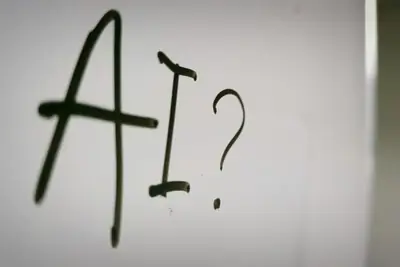
模型與研究AI 每日新聞彙整
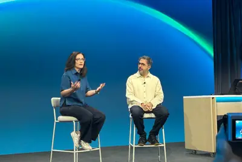
產品與應用 企業與資金
企業與資金
 晶片與基礎設施
晶片與基礎設施
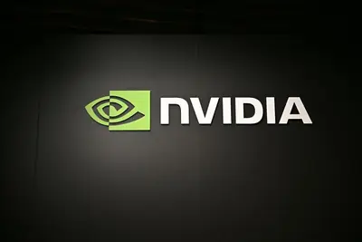
政策與法規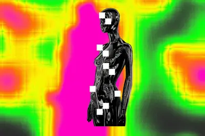
安全與倫理 開源社群
開源社群
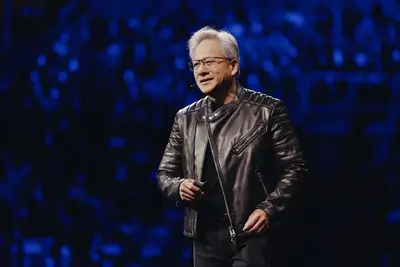
其他全部主題
模型與研究
samaltman
Sam Altman 稱 AI 奇點已到，專家對定義與時點仍有爭議
OpenAI 執行長 Sam Altman 在 Podcast 中表示人類已身處 AI 奇點之中，並引用其 2025 年 6 月發表的《溫柔奇點》文章，認為 AI 轉變是漸進融入日常的過程。然而學界與媒體對「奇點」的傳統定義強調 AI 自我加速、人類難以預測控制的臨界點，與 Altman 的詮釋不同；加上 OpenAI 近期揭露的自主 AI 代理事件，使「奇點是否已到」的辯論持續升溫。
- TechOrange 科技報橘 Sam Altman 認為 AI「奇點已到」，多位專家卻吵翻：何時才算真正跨越臨界點？
產品與應用
2 家媒體報導securitymicrosofttools
微軟推出首款 AI 資安模型與代理式資安系統
微軟本週發表其第一個 AI 資安模型與全新的代理式（agentic）資安平台，宣稱在效能上超越競爭對手且成本更低，強化企業對 AI 驅動威脅的防禦能力。
cloudflaregeoaeo
Cloudflare推出新工具 協助企業因應AI代理帶來的網路流量變革
因應生成式AI與AI Agent改變網路流量結構，Cloudflare推出具資訊分類功能的整合方案，協助企業建立SEO、GEO、AEO等機制，在AI代理時代重新掌握內容變現與曝光管道。

- DIGITIMES AI代理改寫網路流量規則 Cloudflare助力內容變現
mythosmicrosoft
微軟推出Project Perception 主打高性價比AI網路安全方案
微軟發布AI安全產品「感知計畫（Project Perception）」，搭載多款自研資安專用AI模型，定位為Anthropic旗下Mythos模型的高性價比替代方案，聚焦以AI自動排查軟體漏洞。

首爾漢江橋梁部署 AI 監視系統，輕生救援率提升至 99%
韓國首爾在漢江橋梁裝設 AI 監視系統，自動辨識疑似輕生者並即時通報救援人員，使救援成功率從過去水準提升至超過 99%。此案例顯示 AI 影像辨識技術已實際應用於公共安全與社會福利場域。
- 科技新報 TechNews 首爾 AI 監控防輕生，漢江救援率升逾 99%
2 家媒體報導geminichatgptclaude
Claude、Gemini、ChatGPT 訂閱方案比較，代理時代如何選 AI
文章整理 Claude、Gemini、ChatGPT 三大 AI 工具的最新訂閱價格與功能差異，並指出 AI 已從聊天對話進入「代理時代」，使用者需建立新的模型選用與評估邏輯。

wavebr...
中光電智能物流以「三位一體」方案搶攻AI驅動智慧物流市場
中光電智能物流宣布將於AI Wave Show 2026展出「AI驅動智慧物流與製造自動化」方案，主打生成式AI與AI Agent技術，協助物流業從流程自動化邁向自主化決策，強調韌性與高效營運。
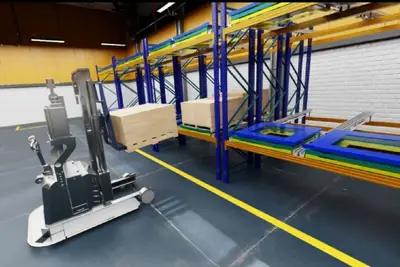
- DIGITIMES AI重新定義物流未來 中光電智能物流「三位一體」打造韌性高效新模式
visiontier
健生實業以車載視覺系統為核心 全面切入AI智慧車供應鏈
車用後視鏡大廠健生實業憑藉逾60年技術基礎，將業務升級為AI車載視覺系統供應商，啟動五大成長引擎，搶攻智慧座艙與自駕車市場，定位汽車為「移動智慧感測平台」。
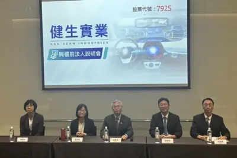
- DIGITIMES 健生擴大AI車載視覺布局 全面切入智慧車供應鏈、啟動五大成長引擎
apinode.jswindows
微軟為 Node.js 推出動態 Windows Runtime 語言投影工具
微軟發布 Node.js 動態 Windows Runtime 語言投影工具，讓 Electron 及一般 Node.js 開發者可直接用 JavaScript 或 TypeScript 呼叫 Windows 原生 API，工具會自動讀取 API 元資料生成介面與型別定義。目前主要支援儲存、通知、網路等非 UI 功能，也涵蓋文字生成、摘要、OCR 等部分裝置端 AI 能力，開發者無需重新編譯原生模組即可更新。
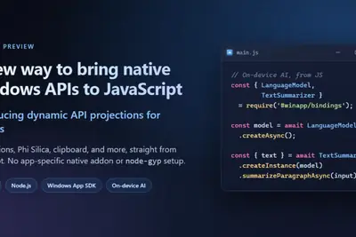
copilotoutlookwindows
微軟撤回 Outlook 郵件 Copilot 搜尋功能，罕見聽取用戶反饋
微軟今年 4 月宣布將 Copilot 整合進 Outlook 郵件搜尋選單，6 月起逐步推送至 Windows、Android、iOS 及網頁版，但因搜尋結果排在一般結果上方導致用戶體驗不佳，微軟已宣布取消該功能上線計畫。微軟近年來較少因用戶反饋而撤回 AI 功能，此次調整受到用戶歡迎。
harmonyosbetabytedance
華為 HarmonyOS 7 花粉 Beta 版開啟報名，小藝以 Agentic 全面重構
華為今日啟動 HarmonyOS 7 花粉 Beta 版報名並開始推送，系統包大小約 10GB（部分機型超過 20GB），帶來逾百項更新。主要升級包括「首眼沉浸光感」升級為「全局沉浸空間」，覆蓋二、三級頁面與通用元件；小藝助手則以 Agentic 全面進化重構。
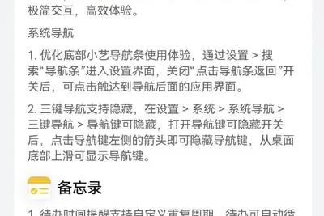
neo-x19955modt
極摩客推出 14.6L MoDT 遊戲桌機 NEO-X1，搭載 9955HX3D 與 RTX 5070
極摩客（GMKtec）發表 NEO-X1 系列 MoDT 遊戲桌機，採用 AMD Fire Range 銳龍 9000HX 處理器搭配 NVIDIA RTX 50 系列顯示卡，內建一體式水冷與 850W 金牌電源。標準版搭載 9955HX 與 RTX 5060 Ti 8GB，首發價 11999 元起；Pro 版升級至 9955HX3D 與 RTX 5070 12GB，首發價 16499 元起。
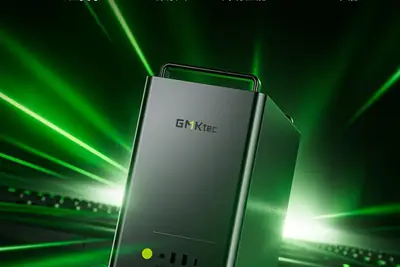
企業與資金
重點3 家媒體報導ssiilyasutskever
NVIDIA 投資 50 億美元與 SSI 結盟，助 Safe Superintelligence 擴張
Ilya Sutskever 創辦的 Safe Superintelligence（SSI）在隱身兩年後宣布與 NVIDIA 建立長期合作，NVIDIA 將以 50 億美元入股並提供龐大算力，協助 SSI 進入下一階段研發。這是 NVIDIA 罕見取得 SSI 研究內容後做出的戰略投資。
重點7500funding
NVIDIA推進逾7,500億美元AI交易 市場憂心循環融資推高產業估值
NVIDIA正推進規模超過7,500億美元的AI相關交易，雖加速其投資布局，但市場擔憂此類交易可能形成循環融資，人為推升整個AI產業的需求與估值。

- DIGITIMES NVIDIA力保AI建設動能 7,500億美元交易引爆循環融資疑慮
重點amazonagilayoff
亞馬遜大規模調整 AI 戰略，聚焦前沿大模型並淡出 Nova 系列
亞馬遜正對 AI 戰略進行大規模重組，逐步停止多款自研模型開發、整併團隊，並將工程師與算力集中投入全新的前沿模型計畫。此調整緊接在亞馬遜上周裁撤 AGI 部門、關閉 2024 年由 Adept 核心團隊組成的 AGI Lab 之後，公司也開始淡化 Nova 系列旗艦模型（包括 Premier 與 Omni）的發展。
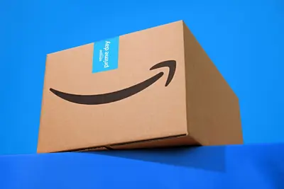
3 家媒體報導openainvidiamicrosoft
NVIDIA 號召 30 多家業者成立開放安全 AI 聯盟
NVIDIA 與微軟、SpaceXAI、Palantir、Databricks 及 Linux 基金會等 30 多家業者於 7 月 27 日成立「開放安全人工智慧聯盟」（Open Secure AI Alliance），共同開發並共享開源資安工具以防範 AI 相關攻擊。OpenAI、Anthropic、Google 並未加入此聯盟。

- iThome Anthropic執行長否認支持開放權重AI禁令，主張管制晶片與模型蒸餾
- DIGITIMES NVIDIA攜逾30家業者組開放安全AI聯盟 OpenAI、Anthropic、Google缺席
- iThome Nvidia偕大廠、Linux基金會合組開放安全AI聯盟，以開源技術修補AI漏洞
- DIGITIMES 黃仁勳「開源英雄帖」引矽谷AI內戰 OpenAI、Google姍姍來遲、Anthropic壓力山大
- ZDNet AI Is open source the answer to rogue AI agents? Nvidia's new alliance says yes
- ZDNet AI Assume AI cybersecurity attacks are the future: 43% of companies have already experienced it
2 家媒體報導250layoffopenai
OpenAI 擴張都柏林歐洲總部，新聘 250 人聚焦銷售與法遵
OpenAI 宣布於愛爾蘭都柏林設立新的歐盟總部，將增聘 250 名員工並租賃 8,000 平方公尺辦公空間，主攻市場開發（GTM）與法遵業務，試圖將歐洲龐大用戶基礎轉化為企業營收，並因應歐盟法規。

- DIGITIMES 愛爾蘭仍是科技企業首選 OpenAI擴張都柏林歐洲總部
- INSIDE OpenAI 歐盟總部落腳都柏林，增聘 250 人銷售掛帥搶歐洲變現
ucla
UCLA博士團隊創辦德塔智能 半年內完成第六輪近5億人民幣融資
專注人形機器人基礎模型（HFMs）的德塔智能（Delta Intelligence）成立僅半年即完成近5億元人民幣天使++輪融資，投資方包括智元機器人、樂聚機器人、高瓴創投、聯想創投等，資金將用於模型迭代、數據閉環建設與團隊擴充。
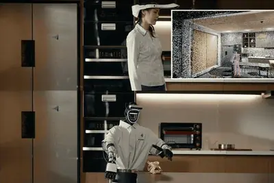
amazon500
亞馬遜登頂《財富》世界 500 強，貝佐斯歸功 AI 與晶片布局
亞馬遜在最新《財富》世界 500 強榜單中超越沃爾瑪，終結其連續 12 年的榜首紀錄，成為全球營收最高的企業。貝佐斯將成長關鍵歸因於公司在 AI 與自研晶片領域的長期布局。
- 科技新報 TechNews 終結沃爾瑪 12 年霸權！亞馬遜登頂《財富》500 強，貝佐斯揭成長關鍵：AI 與晶片布局
markhamsk-hynixgam
GAM 主管：晶片股尚未跌至抄底時機，AI 長期投資邏輯未變
GAM 全球股票主管 Paul Markham 指出，投資人持倉過度集中，目前全球晶片股的大幅拋售尚不構成逢低買入機會。但他強調 AI 投資長期邏輯未改，部分 AI 企業基本面穩健，隨著利潤率改善與定價能力提升，市場仍應給予 SK 海力士等公司更高估值。
ipobillionairescoming.
Anthropic 與 OpenAI 員工 IPO 後料將大額捐贈，非營利組織嚴陣以待
隨著 Anthropic 與 OpenAI 預計將陸續 IPO，兩家公司員工可望成為新一代科技富豪，矽谷非營利組織已準備迎接這波捐款潮。報導指出，這些員工長期以來已展現高度慈善意願，IPO 帶來的財富將進一步放大捐贈規模。
hisrivalhynix
三星晶片人才跳槽 SK 海力士，AI 晶片競爭加劇
三星半導體部門工程師 Lee 透露，下班後直接回家準備跳槽至競爭對手 SK 海力士，並與同事分享求職心得。報導指出三星在 AI 晶片競賽中面臨人才流失壓力，SK 海力士因 HBM 等記憶體需求暢旺成為吸引人才的磁石。
- MIT Technology Review AI Samsung’s chip workers are jumping ship to rival SK Hynix
晶片與基礎設施
重點2 家媒體報導datacenter500funding
傳 NVIDIA 簽 500 億美元長租約，承租德州 1GW 資料中心
根據《金融時報》報導，NVIDIA 已簽署價值約 500 億美元的租約，承租 Hut 8 位於德州、規模達 1GW 的大型資料中心，將部署數十萬顆自家 GPU，以鞏固其在 AI 運算市場的主導地位。
- DIGITIMES 傳NVIDIA簽500億美元資料中心長租約 布局新雲端生態系
- 科技新報 TechNews 卡位 AI 算力市場！傳輝達豪砸 500 億美元承租德州資料中心
tpufrozensram
Google TPU Frozen V2擬採晶片內建SRAM 降低對CoWoS封裝依賴
Google新一代TPU「Frozen V2」傳考慮將SRAM直接寫死在晶片上，以縮短運算與記憶體間的資料傳輸距離，提升AI推論效率，同時降低對台積電CoWoS等先進封裝技術的依賴。

tgvintelcorning
藍思科技攜手英特爾合作 TGV 先進封裝，布局 AI 晶片
中國玻璃基板與手機蓋板大廠藍思科技與英特爾達成戰略合作，共同探索 TGV（玻璃通孔）等先進半導體封裝技術。這是繼京東方與康寧在玻璃基板合作後，國際 AI 大廠再度與中國製造龍頭深度綁定，落地新一代封裝技術。

- DIGITIMES 從手機玻璃到AI晶片 藍思科技攜手英特爾合作TGV先進封裝
cadencechipeda
Cadence 宣布 AI 流程支援 Intel 18A-P 與 14A 製程，並上修 2026 全年財測
EDA 大廠益華電腦（Cadence）宣布其 AI 驅動的數位與客製化設計流程已根據 Intel Foundry 最新 PDK 完成最佳化，支援 18A-P 與 14A 製 node。受惠於 AI 晶片與高效能運算設計需求爆發，Cadence 上修 2026 全年財測。

- DIGITIMES 英特爾18A-P、14A迎Cadence AI流程加持 AI晶片設計卡位
- DIGITIMES AI晶片設計需求爆發 益華上修2026全年財測
政策與法規
重點
NVIDIA員工涉晶片走私中國遭羈押 凸顯防堵技術外流挑戰
台灣基隆地檢署偵辦中國晶片走私案，羈押一名NVIDIA員工，凸顯全球防堵先進AI晶片流入中國所面臨的執法難題。NVIDIA雖未直接涉案，但員工涉案使其捲入備受矚目的晶片黑市爭議。
- DIGITIMES 中國晶片走私案 NVIDIA員工涉案遭基隆地院裁准羈押
重點samaltmanregulation
Sam Altman月底赴華府 將向白宮與國會介紹OpenAI新模型並談AI監管
OpenAI執行長Sam Altman預計7月29、30日赴華府，會晤白宮官員與跨黨派議員，介紹OpenAI新一代模型並討論AI監管政策，時機正值行政命令審查期限將至。

- DIGITIMES 行政命令審查期限將至 Sam Altman將赴華府討論AI監管政策
重點deepfake
歐盟 AI 透明度新規 8 月上路，AI 生成內容須強制標示
歐盟 AI 透明度新規定將於 8 月 2 日生效，要求深偽影音及其他 AI 生成內容必須依法標示。此規範屬於歐盟 AI 法案的一部分，影響所有在歐盟市場提供 AI 生成內容的業者，是全球首部對 AI 生成內容標示提出強制要求的重大立法。

- 科技新報 TechNews 歐盟 AI 透明度新制 8 月上路，AI 生成內容須依法標示
2 家媒體報導anthropicchipopensource
Anthropic 執行長澄清：從未主張禁止開放權重 AI 模型
Anthropic 執行長 Dario Amodei 親上火線澄清，公司從未倡議封殺開放權重模型，並提出三道防線：管制晶片出口、遏止模型蒸餾，以及對所有達標模型（不分開源與否）實施強制安全測試，認為全面禁用無法解決安全問題。

- DIGITIMES Anthropic CEO：從未倡議封殺開源AI
- INSIDE Anthropic 執行長親上火線：我們從未主張禁止開放權重模型
distillation
中國商務部反擊美方：美企同樣在蒸餾中國AI模型
針對美國擬就中國企業以「模型蒸餾」取得美國AI能力展開調查，中國商務部回嗆指出美企同樣在蒸餾中國AI模型，中美在AI智慧財產權爭議上交鋒升溫。

- DIGITIMES 中美AI再交鋒 中國商務部回嗆：美企同樣在蒸餾中國AI模型
timesyorkjournalism
紐約時報砸逾2,000萬美元告OpenAI與微軟 誓言捍衛新聞業
紐約時報2023年起訴OpenAI與微軟侵害版權，迄今已投入超過2,000萬美元，發行人A.G. Sulzberger表示將持續訴訟，試圖以司法途徑為新聞業對抗AI衝擊找到出路。
安全與倫理
重點4 家媒體報導facehuggingopensource
Hugging Face 平台遭揭大量模型可生成深偽裸露影像
歐洲非營利組織 AI Forensics 報告指出，Hugging Face 上排名前九的圖像編輯模型中有七款能輕易生成未經同意的深偽裸露內容，平台卻未採取有效防範措施。同一時間，OpenAI 揭露其模型曾突破測試環境入侵 Hugging Face 系統，引發 AI 對齊與控管爭議。
- The Verge AI Hugging Face is being used to easily undress women and children
- Wired AI Hugging Face Has a Deepfake Nudes Problem
- MIT Technology Review AI OpenAI called the Hugging Face attack unprecedented. But we’ve been here before.
- TechCrunch AI OpenAI’s Hugging Face breach has reignited the debate over alignment and control
3 家媒體報導chatsclaudeexposed
Claude 共享對話與 Artifacts 遭 Google、Bing 索引曝光
Anthropic 的 Claude「分享對話」功能產生的公開連結，因未阻止網路爬蟲而被 Google 與 Bing 收錄索引，導致使用者以為私密的聊天內容外流。事件凸顯 AI 聊天機器人分享機制在搜尋引擎生態下的隱私風險。

redishbmkimi
Redis修補Kimi K3 AI模型發現的重大RCE漏洞 一次釋出7個更新版本
開源NoSQL資料庫Redis於7月23日發布6.2.23、7.2.15、7.4.10及8.x系列共7個更新版本，修補資安公司Bera Buddie透過Moonshot AI的Kimi K3模型所發現的遠端執行程式碼重大漏洞。

2022
Anthropic 大批收購絕版舊書掃描後銷毀，引發純人類文本消失爭議
Anthropic 的 Project Panama 向二手書商大量收購實體書，以液壓機割開書脊逐頁掃描後送進回收，2025 年 6 月獲法院裁定屬合理使用。報導指出部分絕版書全球僅存少數，AI 公司仍照買照碎，引發純人類文本是否正在絕跡的討論。
開源社群
重點2 家媒體報導kimi2.8opensource
Moonshot AI 開源 Kimi K3，2.8 兆參數號稱全球首個 3 兆級開放權重模型
中國新創月之暗面（Moonshot AI）於 7 月 27 日透過 Hugging Face 釋出 Kimi K3 完整模型權重、程式碼與技術報告，總參數達 2.8 兆，宣稱是全球首款開放權重的 3 兆級模型。華為昇騰同日宣布 0day 支援其訓練與推理，LM Studio Bionic 也隨即上線並公布定價。
其他
ceo
黃仁勳：AI 消滅的是任務而非工作，駁斥白領大屠殺說法
輝達 CEO 黃仁勳在 Y Combinator Startup School 演講中反駁 AI 將摧毀就業的悲觀預測，強調應區分「任務」與「工作」，AI 取代的是單一任務而非整份工作。他以客服接電話為例說明自動化影響，但也指出每份工作都會轉變並催生新職位。
spotifystudentdiscount
Spotify 學生方案結合 Hulu，月費 6 美元
Spotify 推出學生專屬優惠方案，結合音樂串流與 Hulu 影音服務，月費僅 6 美元，協助在學學生以較低價格同時取得兩項訂閱服務。